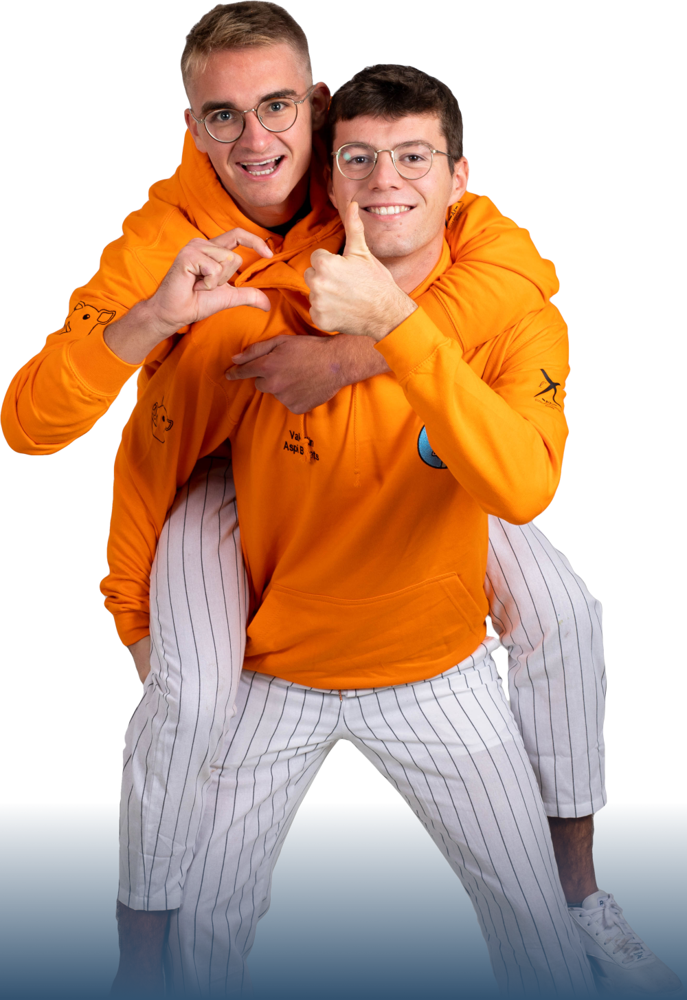
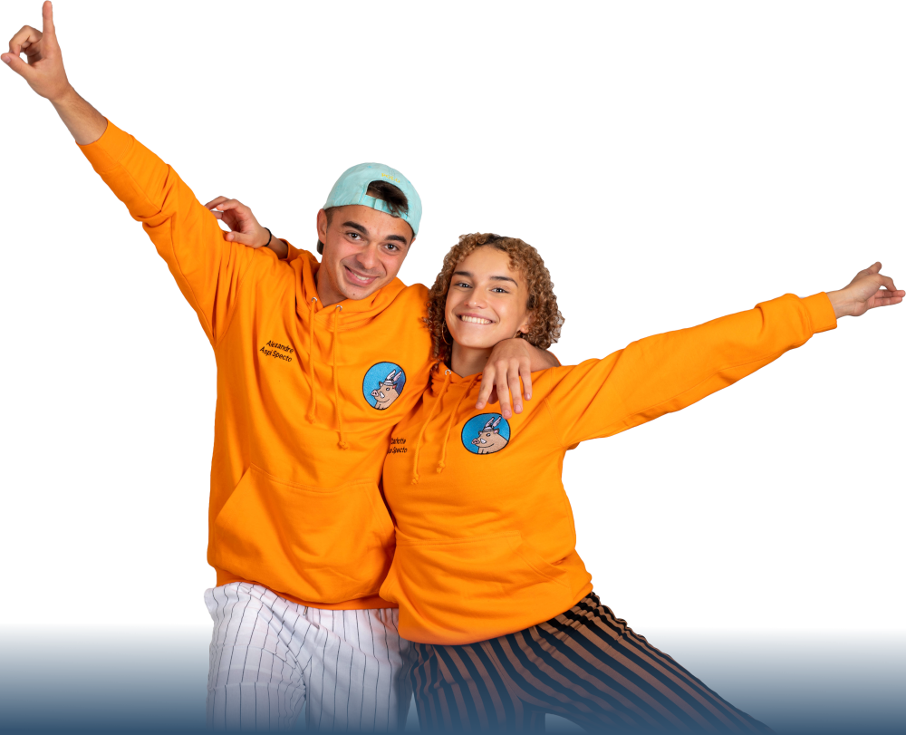
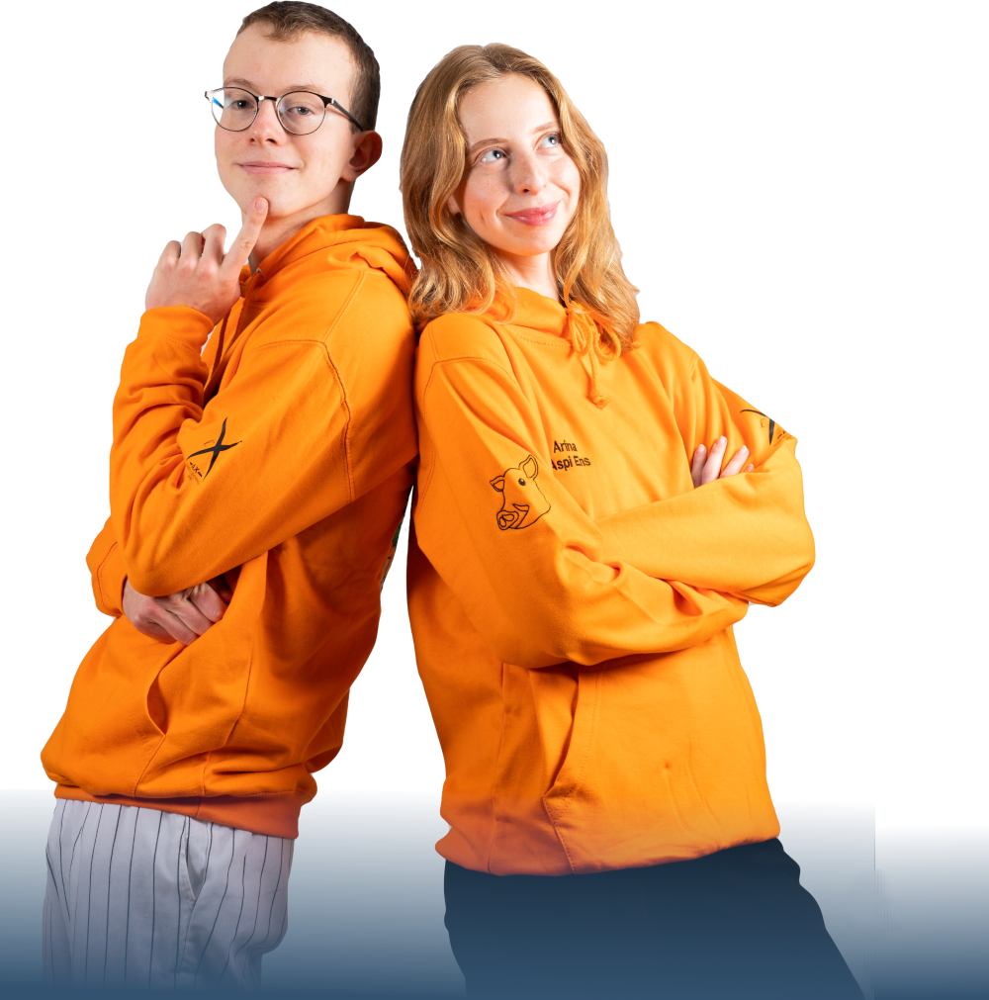
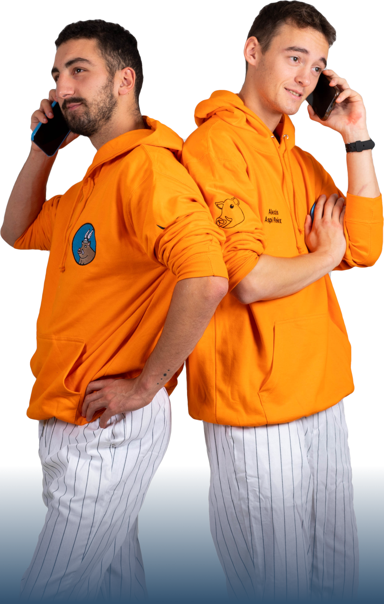
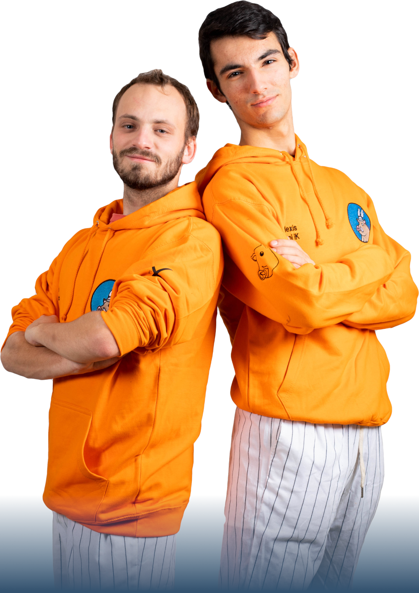
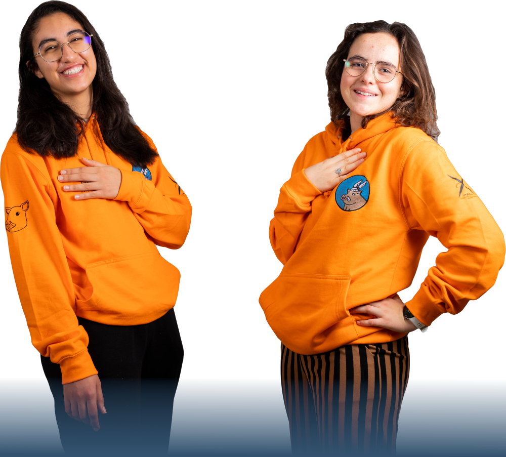

SecGen & Trez
Raphaël — Aspi SecGen
Cet homme donne des colles d’anglais. Et il aime ça. Qu’on s’entende, il fait d’autres choses : X-Forum, trésorier d’une asso écolo… mais son passe-temps préféré reste tirer des fléchettes pour déterminer les notes de ses élèves. Jouer au rugby? Très peu pour lui, il est blessé. Faire des PowerPoint pour les réunions liste? Oui, à consommer sans modération. Avoir l’air sérieux? Ses lunettes vissées sur son gros nez font bien l’affaire. Cet homme a plus d’épices dans son casert qu’on en trouve à Barbès. Pourquoi? Faire des poulets tandori, 12h de préparation. Vous l’aurez compris Raphaël est deter pour tout et rien, et la Kès rentre dans cette catégorie.
Rémi — Aspi Trez
Rémi aime compter (il a pris MAP), et il aime l’argent. Conclusion: il aime compter l’argent. Et il le fait bien ! Mieux qu’il ne joue au foot, heureusement. Pomplard plus connu pour son couplet dans le Baroude que pour ses facultés d’assistance aux victimes, il « aime être overbooké » (oui, il est presque bilingue). Cet aspi Trez de l’espace est par ailleurs hyper accessible et présent dans la vie de promo - n’hésitez jamais à aller discuter avec lui pour parler de tout, de rien et d’argent. Bref, Rémi c’est 50% d’amour de la fissure, 30% de bon vivant, 15% d’humour parfois humoristique et 5% de « envoyez moi vos factuuuures! ».
Binets
Aymeric — Aspi Binets
Seul membre de la section rugby à obtenir son voeu 3 en sport, Aymeric n’en est pas moins un joueur émérite. Après 12 ans de rugby il devait passer pro mais bon les croisés tu connais… Vacancier dans l’âme, il n’hésitera pas à vieux-chouffiser sur son passage à coët alors qu’il a passé tout son stage sous le soleil de Mayotte, à boire du ti punch. Il fait partie du cycle ingénieur mais ne vous y méprenez pas il n’a choisi aucune matière scientifique, excepté les stats qu’il a abandonnées au bout de 2 semaines. Sans aucun doute il saura s’investir pour les binets et son aisance relationnelle fera de lui un Kèssier de tonnerre.
Valentin — Aspi Binets
Si vous croisez un membre de la section volley avec une chemise et un bob de mauvais goût, vous tenez ici le responsable. Crotâl de sa section, Valentin en est surtout un atout sportif majeur : il devait passer pro, mais lui n’a pas l’excuse des croisés. Par ailleurs, son stage Excel sur un bateau l’a parfaitement préparé à naviguer dans les eaux troubles de la comptabilité. Et heureusement qu’il liste, parce qu’on verra peut-être moins son sweat vert sapin de H4 (dites lui qu’il est moche (enfin pas lui mais son sweat on s’entend)). Vous l’aurez compris, armez les toboggans, bouclez les ceintures, Valou ne rigole plus.
Specto
Charlotte — Aspi Specto
Un Dos Tres, esta Charlotte Sancier !! Fan de reggaeton à ses heures perdues, Charlotte saura également s’inspirer de ses multiples origines (guinéenne, marocaine, allemande, italienne et 2,5% juive) pour rendre les Styx plus envoûtants que jamais. Charlotte a toujours su trouver comment couper l’ennui : elle a notamment été hospitalisée 3 semaines pour un grain de riz ! Par ailleurs, toujours en quête de nouvelles expériences, Charlotte a rapidement voulu quitter l’ambiance bourgeoise de Stanislas pour s’occuper de la paix dans le monde. Son stage en gendarmerie lui a permis d’arrêter bon nombre de trafiquants, notamment Pablo Escobar ou El Chapo. De retour sur le plateau, Charlotte saura vous redonner le sourire grâce à ses interventions dignes des gendarmes de Saint-Tropez !
Alexandre — Aspi Specto
Des frites, une fois ! Belge depuis ses 8 ans, Alexandre a développé un amour inconditionnel pour le chocolat, la bière et surtout Angèle. Petit, il organisait les meilleurs goûters d’anniversaire de sa vallée: n’en attendez pas moins de lui cette année ! Après 6 mois passés en sous-marin, VH est habitué à être sous l’eau. Triple champion de France de tennis, pilier de la section foot-foot-foot-foot, Alexandre c’est avant tout de la détermination, de l’ambition et de l’humilité (par exemple, il est nul au UNO). Mais ne vous fiez pas aux apparences: derrière son impressionnant skita se cache un aspi Specto au grand cœur. Il saura notamment vous remonter le moral grâce à son imitation sans pareille de Bambi.
Ens
Paul — Aspi Ens
Que vous l’ayez croisé caméra en main, en fin de Styx ou au détour d’une PC, vous avez tous forcément déjà vu Paul quelque part. Notamment connu pour ses talents d’origami et de beatbox, mais toujours investi à 100% dans ce qu’il fait, vous ne trouverez pas plus appliqué et minutieux que lui ! Du perfectionnisme donc, ainsi qu’une gentillesse débordante et une envie d’être actif : voilà une recette gagnante pour la Kès ! Et quoi de mieux que quelqu’un de charismatique qui s’intéresse au futur de notre école et de ses enseignements pour lister ENS ? Avec Paul aux commandes, plus rien à craindre quant aux évolutions du Cycle Ingénieur ou de votre GPA.
Arina — Aspi Ens
Tenniswoman de renom, Arina excelle sur le terrain autant qu’en cours. Nous venant de MIPT University, notre championne biélorusse aimerait utiliser son background académique pour apporter une vision différente de l’enseignement. Mais, la fissure du BDE de MIPT ne lui ayant pas suffi, elle arrive à l’X avec une seule idée en tête : acquérir le très convoité poste de Kèssier ENS. Son plus grand projet : réussir à te maintenir éveillé en amphi. Profitant de tous les événements sur le platâl, Arina parvient tout de même à avoir un dossier académique qui rendrait n’importe qui jaloux (et même Pauline Jubin !). Motivée et consciencieuse, elle s’attachera à justifier vos absences les plus injustifiables !
Relex
Alexis — Aspi Relex
Lyonnais de source, Mahorais de cœur, Alexis a toujours su égayer l’atmosphère partout où il est passé. La fissure de la logistique du Forum étant terminée, il fallait bien qu’il trouve une nouvelle excuse pour ne pas dormir le soir. Ses cernes actuels faisant de l’ombre sur le Grand Canyon, le budget campagne est passé dans l’anticerne Nivea : il ne fallait quand même pas gâcher son beau sourire sur les trombis ! Du haut de ses 1m85, notre sosie d’Assurancetourix excelle tout autant en basket qu’en bullshitage. Fier d’avoir survécu aux requins de Mayotte, il est revenu en Gaule pour en devenir un… On devient celui qu’on déteste…
Stanislas — Aspi Relex
En tant que deuxième polonais le plus connu France après PLK, il semblait prédestiné au poste d’Inter, mais Zayneb l’ayant vaincu à l’imitation d’un poney, il s’est orienté vers les Relex. Après 4 mois de soleil en RSMA, cet aspi Relex a donc décidé qu’il était temps de travailler un peu… conclusion : il a drop les cours pour lister Kès. Commercial en chef chez X-Projet, ce maître des affaires sait déjà comment gérer des PDG et gratter des partenariats juteux pour la promo. Et puis, les requins de la Réunion étant beaucoup plus vener que ceux de Mayotte, il a décidé d’apprendre à ramer un peu plus vite en allant en Aviron !
Com & iK
Robin — Aspi Com
Ce raideur du dimanche, toujours perché sur son vélo, a su s’aguerrir sous l’hiver Strasbourgeois. Fort de cette expérience, il sera toujours prêt à réchauffer vos cœurs de sa bonne humeur communicative, en vous partageant la vie de promotion ou autour de discussions tous azimuts, du beau temps à Kundera, et ce à tous niveaux de sobriété. Du lycée à son stage, il a exploré différentes facettes de la Com’. C’est un graphiste de renom qui est à l’origine de grandes créations comme la photo de profil insta de son prof de français de première. Ayant toujours su défendre ses projets envers et contre tout, vous ne pouvez espérer un meilleur aspi Com’ !
Alexis — Aspi iK
Eh non, vous ne rêvez pas, il s’agit bien du respo Com’ Gendarmerie ! Après un stage mythe et un TC rempli de saucisses, Alexis revient avec toujours plus de dévotion pour sa promo. Armé de ses fidèles logiciels et de sa volonté infatigable, notre aspi iK n’a peur de rien : professionnel du graphisme et de la fissure, rôliste du dimanche soir accompli, il saura travailler jusqu’au bout de la nuit avec le sourire pour boucler son journal. Grimpeur émérite, Alexis gravira tous les obstacles qui pourraient se trouver sur sa route. Passionné par tous les sujets qui touchent de près ou de loin à notre école, il saura avec brio prendre les rênes de l’iK !
Archi & Inter
Zayneb — Aspi Inter
Elle nous vient tout droit de Lausanne, et vous l’avez probablement déjà tous croisée, tant elle s’ouvre au reste de la promotion, il s’agit bien évidemment de Zayneb. Forte de ses expériences internationales et de sa volonté inébranlable, elle a pour principale ambition d’améliorer l’esprit de promotion et l’intégration des internationaux. Toujours prête à tout donner, vous l’avez sûrement vue fissurer à l’inkhorpo (organiser des raclettes est vite devenu son activité préférée). Toujours un sourire aux lèvres, elle ne rechignera jamais à discuter avec qui que ce soit, qu’il s’agisse de réformes en profondeur ou de sujets du quotidien. Alors n’hésitez pas, foncez et apprenez à connaître cette cavalière de folie !
Anaëlle — Aspi Archi
Le Berre, ou Anaëlle pour les intimes, est une grimpeuse émérite aux talents insolites. Ses capacités d’architecte et d’ingénieure hors-normes ont permis la construction d’un bicorne-pédalo lumineux géant, flottant sur le lac de Coëtquidan. Notre aspi Archi a des rêves plein la tête pour repenser les infrastructures de l’X et en faire un petit coin de paradis pour tous. Attachée à la bonne tenue du Bataclan et motivée par la création de nouveaux espaces pour les promotions, cette jeune femme déterminée au rire communicatif saura faire entendre sa voix auprès de l’administration (et du Bureau Logement). N’hésitez plus et allez lui demander de l’aide pour construire vos projets les plus absurdes et les plus fous, elle n’attend que ça !
Sport & Mili
Alexandre — Aspi Mili
Un coetard RAS à l’air implacable mais pourtant si attachant, de qui parle-t-on ? Mais d’Alex bien sûr ! Ce rugbeux au physique d’Apollon et au charisme imposant saura faire rougir d’envie les plus pêchus du plâtal et vous ne manquerez pas de découvrir son humour “alexandrien” aussi déroutant que mythique. Attaché aux valeurs et à l’esprit militaire de l’X, notre aspi aura à cœur de les perpétuer, tout en restant à l’écoute de ses camarades avec bienveillance et bonne humeur. N’hésitez pas à aller rencontrer notre gentil géant, il ne mord pas malgré les apparences ! Et par pitié aidez-nous : on lui répète d’arrêter de mettre sa grosse polaire kaki et son bonnet noir de repris de justice, mais rien à faire…
Lélia — Aspi Sports
Sportive qui ne lâche rien, toujours là sur le terrain, Lélia (aussi connue sous le nom de Chouk) donnera le meilleur d’elle-même pour les promos. Reine des crêpes à Coët et d’un mental à toute épreuve, elle est passée chez les paras colos pour encore plus de challenge et d’aventure. Présente à tous les entraînements de hand, elle est de tous les matchs, mais restera toujours disponible pour aller courir avec vous ! Et ne vous y trompez pas, notre aspi Sport au sourire contagieux, est aussi au rendez-vous pour discuter au Bôb autour d’une pinte ! Toujours prête à rendre service, elle sera à l’écoute de ses camarades pour améliorer l’expérience du sport à l’X et faire bouger le plâtal !